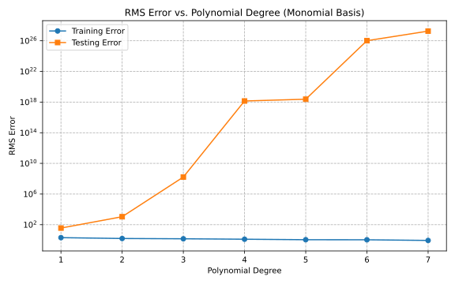
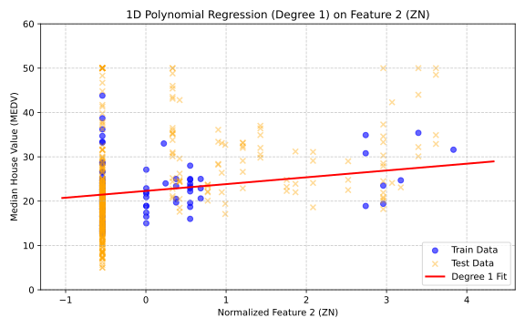
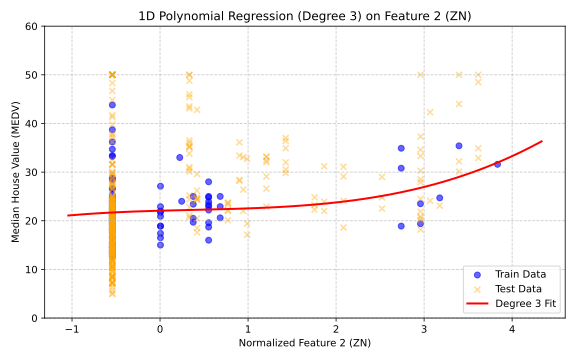
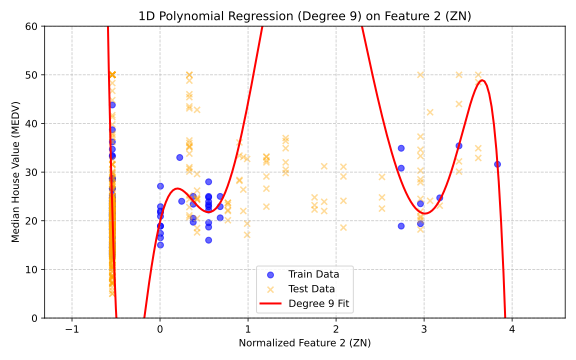
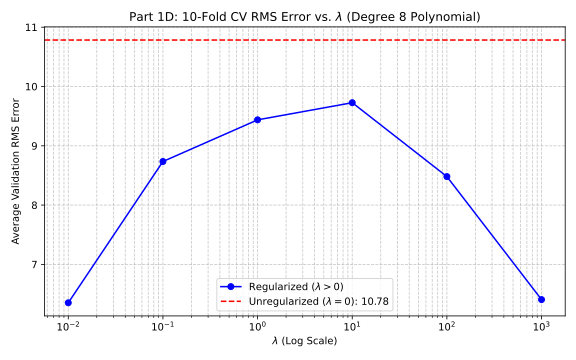

Evaluating linear basis function regression using monomials (x, x², x³, etc.) without cross-terms or regularization. The model is trained on the first 100 data points and evaluated on the remainder.
| Degree | Train RMS Error | Test RMS Error |
|---|---|---|
| 1 | 2.037 | 36.445 |
| 2 | 1.578 | 1,097.203 |
| 3 | 1.449 | 202,083,430.444 |
| 7 | 0.881 | 2.21 × 10²⁷ |

When you make a model too mathematically complex, it learns the training data perfectly, which causes the training error to drop to almost zero. However, because it is hyper-focusing on the random noise and tiny variations in that specific dataset, it fails completely when evaluated on new, unseen data. This is why the testing error explodes exponentially; the model becomes so overly customized to the training set that its predictions for anything else are wildly inaccurate.
def create_monomial_basis(X_data, degree):
N, D = X_data.shape
Phi = [np.ones(N)] # Bias column
for d in range(1, degree + 1):
for j in range(D):
Phi.append(X_data[:, j] ** d)
return np.column_stack(Phi)
# Solve for optimal weights using pseudo-inverse
w = np.linalg.pinv(Phi_train) @ y_train
y_train_pred = Phi_train @ w
y_test_pred = Phi_test @ w# Create Degree 1 basis (bias + normalized features)
Phi_train_deg1 = np.column_stack([np.ones(len(X_train_norm)), X_train_norm])
# Solve for exact weights
w_deg1 = np.linalg.pinv(Phi_train_deg1) @ y_train
w_RM = w_deg1[6] # 6th feature (Average Rooms)
w_DIS = w_deg1[8] # 8th feature (Distance to centers)
print(f"Weight 6 (RM - rooms): {w_RM:.2f}")
print(f"Weight 8 (DIS - distance): {w_DIS:.2f}")Weight 6 (RM): 4.20
Highly reasonable. More rooms generally mean a larger, more
expensive
home.
Weight 8 (DIS): 0.01
Negligible. In this 100-point subset, the penalty for distance
is
likely absorbed by other correlated features.
To better visualize the effects of polynomial degree, we isolate the 2nd feature and plot the resulting curves alongside the normalized training and testing data.
High bias. The straight line provides a generalized trend but misses the clustered behavior of the data points.
Reasonable variance. The curve bends slightly to accommodate the spread of higher normalized values without oscillating like crazy.
High variance. The polynomial shoots up and down drastically, which fails for generalized test points.



Using 10-fold cross-validation, we test L2 penalty values (λ) to stabilize a highly complex Degree 8 polynomial fitted on the 2nd feature.
λ = 0.01
A small penalty (λ = 0.01) perfectly stabilizes the highly volatile degree 8 polynomial, resulting in the
lowest validation error. The unregularized model (λ = 0, red line) overfits and performs poorly by
comparison.

lambdas = [0, 0.01, 0.1, 1, 10, 100, 1000]
kf = KFold(n_splits=10, shuffle=True, random_state=42)
for lam in lambdas:
for train_idx, val_idx in kf.split(Phi):
Phi_train, Phi_val = Phi[train_idx], Phi[val_idx]
y_train, y_val = y_train_full[train_idx], y_train_full[val_idx]
I = np.eye(Phi.shape[1])
I[0, 0] = 0
# w = (Phi^T Phi + λI)^-1 Phi^T y
w = np.linalg.pinv(Phi_train.T @ Phi_train + lam * I) @ Phi_train.T @ y_train